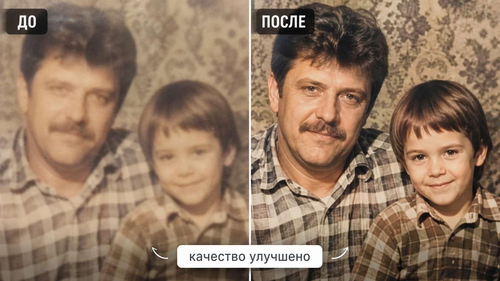

Промтзилла
Этот сценарий отличается от реставрации: тут главный фокус на резкости, шуме, контрасте и читаемости, а не на сильной дорисовке.

Пошаговая инструкция
- 1Возьми максимально качественный скан или фото оригинала.
- 2Загрузи изображение в инструмент редактирования фото онлайн.
- 3Попроси повысить качество без смены лица и без глянцевой ретуши.
- 4Если фото маленькое, укажи нужный итоговый размер или попроси мягкий апскейл.
- 5Сравни результат с оригиналом: похожесть людей важнее резкости.
Пример результата
На обложке показан сценарий до/после: исходное фото и результат, который можно получить через инструмент редактирования фото онлайн.
Промт
RU
Улучши качество старой фотографии. Сделай: — убери цифровой шум, мутность, лёгкое размытие и низкий контраст; — повысить резкость и читаемость деталей; — аккуратно восстанови глаза, волосы, ткань, фон и мелкие элементы; — сохрани лица, возраст, выражения, пропорции, одежду и позы людей; — не дорисовывай новые черты лица и не меняй идентичность; — не делай кожу пластиковой и не превращай фото в современную глянцевую ретушь. Если какие-то детали не видны в оригинале, не выдумывай их слишком уверенно.
EN
Improve the quality of the old photograph. Do the following: — remove digital noise, haze, slight blur, and low contrast; — increase sharpness and detail readability; — carefully restore eyes, hair, fabric, background, and small elements; — preserve faces, age, expressions, proportions, clothing, and poses; — do not invent new facial features and do not change identity; — do not make skin plastic and do not turn the photo into modern glossy retouching. If some details are not visible in the original, do not invent them too confidently.
Важно
Слишком агрессивное улучшение делает людей похожими на других. Лучше просить мягкое повышение качества и сохранять оригинал рядом для сравнения.
Теги